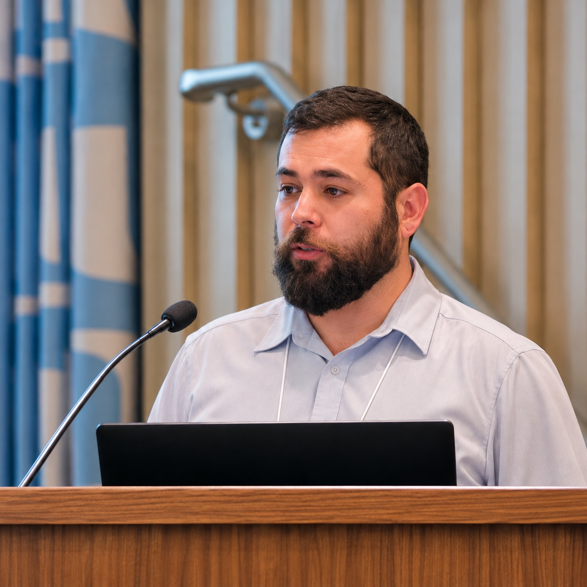

About Me

I hold a Bachelor's degree in Oceanology from the Faculty of Marine Sciences at the Autonomous University of Baja California (Mexico), where I conducted research on the circulation patterns of Todos Santos Bay and their wind dependencies using high-frequency radars. I then earned a Master’s degree in Physical Oceanography at the Center for Scientific Research and Higher Education of Ensenada (Mexico), focusing on the impact of wave-current interactions on the dynamics of the Gulf of Tehuantepec during strong gap-wind conditions.
I completed my Ph.D. at the Laboratory of Geophysical and Spatial Oceanography Studies (LEGOS) in France, where I explored ocean-atmosphere interactions and their influence on the dynamics of the Gulf of Mexico. Afterward, I undertook a postdoctoral position at LEGOS, where I investigated the indirect feedbacks of mesoscale ocean eddies on the generation of sea surface waves, and evaluated the capabilities of the upcoming ODYSEA satellite mission in estimating surface currents, wind stress, and energy fluxes.
Currently, I am a postdoctoral researcher at the Center for Ocean-Atmospheric Prediction Studies (COAPS, United States of America), where my research focuses on the ocean dynamics of the Gulf of Mexico, with a particular interest in air-sea interactions and the factors leading to the separation of eddies from the Loop Current.